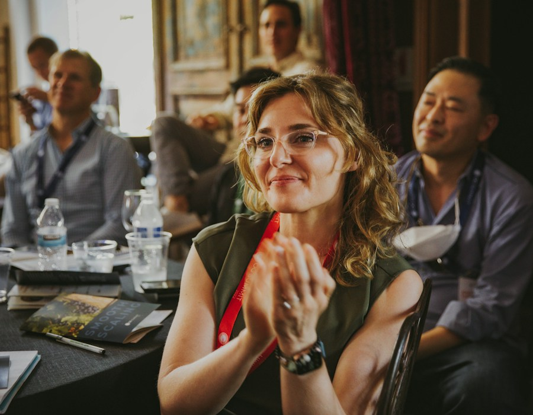

Human Capital Excellence
Building Leaders
Who Build the World
Frontiers Executive Institute develops exceptional professional capital for business ventures and NGOs — through world-class training, mentoring, and strategic leadership programmes.
What We Offer
Develop every dimension
of your leadership
Our programmes span corporate executives, emerging managers, and NGO leadership — delivering tailored interventions that create lasting institutional strength.
Executive Training
Rigorous leadership programmes designed to sharpen decision-making, strategic thinking, and organisational acumen.
Enquire about executive trainingC-Suite Mentoring
One-on-one and cohort-based mentoring connecting emerging leaders with proven executives across sectors.
Enquire about mentoringLeadership Keynotes
Transformative keynote engagements that challenge orthodoxy and ignite purpose-driven leadership.
Enquire about leadership keynotes
NGO Capacity Building
Structured capacity programmes that equip NGO leadership to deliver measurable social impact at scale.
Explore NGO capacity buildingOur Mission
Human capital is the
ultimate competitive edge
At Frontiers Executive Institute, we believe that the quality of an organisation's leadership determines the ceiling of its ambition. We exist to raise that ceiling — systematically, rigorously, and at scale.
Whether you are building a growth-stage business or a mission-driven NGO, we provide the leadership architecture to get there — and sustain it.
- Evidence-based curriculum rooted in real-world leadership
- Faculty drawn from the highest levels of industry and government
- Peer networks that last well beyond the programme
- Measurable outcomes tied to organisational performance
For NGOs & Social Enterprises
Built to scale
and evolve
Mission-driven organisations face unique leadership pressures — resource constraints, accountability demands, and the imperative to demonstrate impact. Our NGO programmes are designed precisely for that reality.
- Governance and board effectiveness workshops
- Programme management and M&E leadership
- Donor relations and resource mobilisation
- Strategic communications for impact organisations
Testimonials
Voices from the frontier
Frontiers Executive Institute gave our leadership team a framework for thinking we simply did not have before. The transformation was immediate and measurable.
Their NGO capacity programme helped us scale from a local outfit to a pan-African operation. No other institution comes close to what FEI delivers.
The rigour, the network, the insight — FEI delivers an experience that reshapes how you lead and how you see the world. Worth every investment.
Trusted by leading organisations
Start Today
Ready to develop
your leadership?
Talk to our team about the right programme for your organisation. Individual enrolment or bespoke design — we have the right solution.